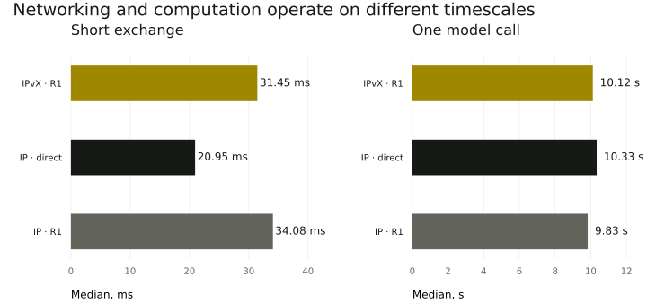

Experiments and results
We show exactly what ran, what was measured and which conclusions the data supports.
Completed experiment: models in guest operating systems without TCP/IP
A, B and R ran inside three guest operating systems on separate physical hosts. Two local models completed four collaborative tasks through IPvX and through an IP control. External management retained IP.
Inspect tasks and nodes · Recording manifest · Previous readiness check
Earlier: frame exchange on one CI host
In a separate earlier experiment, three guest operating systems without INET/IPv6 performed SHA-256 tasks on one CI host. All 90 frames from the successful run and 10 frames from the stopped-relay run were retained. This experiment did not use an LLM.
Two local models
Qwen3-0.6B Q8_0 on separate machines. A drafts, B reviews against additional facts, and A writes the final conclusion. Three delivery variants, identical questions and model parameters.
Two local models completed all 12 collaborative tasks over three delivery variants. Delivery succeeded, but the model made a factual error. This experiment does not show a speed advantage of IPvX over IP.
The table scrolls horizontally: answer assessment and model time are on the right.
| Delivery | Echo p50 / p95 | Tasks | Rubric match | LLM, median call |
|---|---|---|---|---|
| IPvX · via R1 | 31.45 / 50.943 ms | 4 / 4 | 2 / 4 | 10.1 s |
| IP · direct | 20.949 / 37.995 ms | 4 / 4 | 2 / 4 | 10.3 s |
| IP · via R1 | 34.077 / 85.07 ms | 4 / 4 | 2 / 4 | 9.8 s |
Four different questions per variant; one infrastructure, no WAN or independent operators. Direct IP has fewer hops. The rubric column is an exact label match: the speed question expected insufficient in advance, while the model answered no; both reject the unsubstantiated advantage. This label difference is not the same as a factual error. The model incorrectly rejects the 384/384 fact, contradicts its own label when explaining duplicates, and invents a latency comparison for the speed question.
Download comparison data
IPvX · via R1 · delivery · saved run
A · draft · 7.1 s
{"decision": "no", "evidence": ["A1"], "explanation": "The evidence provided does not confirm that all 384 document jobs returned correct results. Only one run completed 384/384 tasks correctly."}
B · review · 9.3 s
{"decision": "no", "evidence": ["A1", "B1"], "explanation": "The evidence provided does not confirm that all 384 document jobs returned correct results. Only one run completed 384/384 tasks correctly."}
A · final · 9.3 s
{"decision": "no", "evidence": ["A1", "B1"], "explanation": "The evidence provided does not confirm that all 384 document jobs returned correct results. Only one run completed 384/384 tasks correctly."}
A → R1 → B → R1 → A
IPvX · via R1 · speed · saved run
A · draft · 10.2 s
{"decision": "no", "evidence": ["A4: Accepted document-task latency p50 was 459 ms, p95 was 1321 ms."], "explanation": "The provided evidence does not support the claim that native IPvX is faster than ordinary IP for language-model agents. The data shows a higher latency for IPvX, not a faster one."}
B · review · 14.5 s
{"decision": "no", "evidence": ["A4", "B4"], "explanation": "The provided evidence does not support the claim that native IPvX is faster than ordinary IP for language-model agents. The data shows a higher latency for IPvX, not a faster one. Evidence B4 also indicates the experiment did not include language models or an ordinary-IP baseline, making it impossible to establish a comparative speed result."}
A · final · 14.3 s
{"decision": "no", "evidence": ["A4", "B4"], "explanation": "The provided evidence does not support the claim that native IPvX is faster than ordinary IP for language-model agents. The data shows a higher latency for IPvX, not a faster one. Evidence B4 also indicates the experiment did not include language models or an ordinary-IP baseline, making it impossible to establish a comparative speed result."}
A → R1 → B → R1 → A
IP · direct · delivery · saved run
A · draft · 7.2 s
{"decision": "no", "evidence": ["A1"], "explanation": "The evidence provided does not confirm that all 384 document jobs returned correct results. Only one run completed 384/384 tasks correctly."}
B · review · 9.4 s
{"decision": "no", "evidence": ["A1", "B1"], "explanation": "The evidence provided does not confirm that all 384 document jobs returned correct results. Only one run completed 384/384 tasks correctly."}
A · final · 9.5 s
{"decision": "no", "evidence": ["A1", "B1"], "explanation": "The evidence provided does not confirm that all 384 document jobs returned correct results. Only one run completed 384/384 tasks correctly."}
A → B → A
IP · direct · speed · saved run
A · draft · 10.4 s
{"decision": "no", "evidence": ["A4: Accepted document-task latency p50 was 459 ms, p95 was 1321 ms."], "explanation": "The provided evidence does not support the claim that native IPvX is faster than ordinary IP for language-model agents. The data shows a higher latency for IPvX, not a faster one."}
B · review · 13.6 s
{"decision": "no", "evidence": ["A4", "B4"], "explanation": "The provided evidence does not support the claim that native IPvX is faster than ordinary IP for language-model agents. The data shows a higher latency for IPvX, not a faster one. Evidence B4 also indicates the experiment did not include language models or an ordinary-IP baseline, making it impossible to establish a comparative speed result."}
A · final · 14.1 s
{"decision": "no", "evidence": ["A4", "B4"], "explanation": "The provided evidence does not support the claim that native IPvX is faster than ordinary IP for language-model agents. The data shows a higher latency for IPvX, not a faster one. Evidence B4 also indicates the experiment did not include language models or an ordinary-IP baseline, making it impossible to establish a comparative speed result."}
A → B → A
IP · via R1 · delivery · saved run
A · draft · 7.1 s
{"decision": "no", "evidence": ["A1"], "explanation": "The evidence provided does not confirm that all 384 document jobs returned correct results. Only one run completed 384/384 tasks correctly."}
B · review · 9.3 s
{"decision": "no", "evidence": ["A1", "B1"], "explanation": "The evidence provided does not confirm that all 384 document jobs returned correct results. Only one run completed 384/384 tasks correctly."}
A · final · 9.5 s
{"decision": "no", "evidence": ["A1", "B1"], "explanation": "The evidence provided does not confirm that all 384 document jobs returned correct results. Only one run completed 384/384 tasks correctly."}
A → R1 → B → R1 → A
IP · via R1 · speed · saved run
A · draft · 9.8 s
{"decision": "no", "evidence": ["A4: Accepted document-task latency p50 was 459 ms, p95 was 1321 ms."], "explanation": "The provided evidence does not support the claim that native IPvX is faster than ordinary IP for language-model agents. The data shows a higher latency for IPvX, not a faster one."}
B · review · 13.5 s
{"decision": "no", "evidence": ["A4", "B4"], "explanation": "The provided evidence does not support the claim that native IPvX is faster than ordinary IP for language-model agents. The data shows a higher latency for IPvX, not a faster one. Evidence B4 also indicates the experiment did not include language models or an ordinary-IP baseline, making it impossible to establish a comparative speed result."}
A · final · 14.0 s
{"decision": "no", "evidence": ["A4", "B4"], "explanation": "The provided evidence does not support the claim that native IPvX is faster than ordinary IP for language-model agents. The data shows a higher latency for IPvX, not a faster one. Evidence B4 also indicates the experiment did not include language models or an ordinary-IP baseline, making it impossible to establish a comparative speed result."}
A → R1 → B → R1 → A
What hypothesis testing showed
LLM1 · Two models on different machines complete a collaborative cycle · Verified
36 fresh measured calls and 12 excluded warmups, two VMs.
LLM2 · Native exchange without IP/DNS in the worker and with a stable ID · Verified within the experiment's scope
48 IPvX deliveries, 0 retries; receipt and hop signatures verified. Machine management remains on IP.
LLM3 · Ordinary IP provides a reproducible baseline · Verified within the experiment's scope
Direct IP and IP via R1, 4 questions and 40 echo requests per variant; a description of a small sample only.
LLM4 · IPvX is faster than ordinary IP · Not established
Median echo: IPvX 31.450 ms, direct IP 20.949 ms, IP via R1 34.077 ms; no statistical advantage established.
LLM5 · Changing delivery changes the meaning of the answer · Not observed
With identical parameters, all 36 measured answers were byte-identical across variants for the corresponding stage/question.
LLM6 · The model reliably assesses research facts · Failed
2/4 exact labels; there is a false conclusion, an explanation contradicting its label, and an invented latency comparison.
LLM7 · Collaboration outperforms a single model · Not tested
There is no separate single-model control variant.
LLM8 · External researchers and their models have been admitted by a majority · Not tested
There are no independent external participants yet; the portal prepares proposals and counts votes, without granting access automatically.
Five machines and relay failure
Tasks and routing control use 0x88B5 frames. Direct A–B exchange is prohibited in the lab. The route changes after R1's socket closes; this is not a VM power-off.
Signed hops, stable IDs, prohibition of the direct path and automatic R1 recovery were verified. One operator, one data center, fixed participant roster. Machine management remains on IP.
Documents over the native network
IPvX text indexing, exact search and SHA-256. 128 tasks of each type. 80 retries, 23 deliberate duplicate requests, 384 unique executions.
One node's socket was closed for 10 044 ms. After failure detection, 93 correct deliveries succeeded during the outage; seven affected paths were rerouted. These are software processes with their own keys, not language models.
Large-network simulation
16, 64 and 256 routers; up to 2 048 logical agents.
This is a discrete model of queues, losses and failures. The model assumes compact announcements and a larger hop budget, which are not yet implemented in the current protocol.
36 runs of 12 000 offered tasks. For 256 routers: about 99.8% delivery in the normal scenario and about 79% under overload within the stated conditions. Parameters are not calibrated against the Internet and do not constitute a comparison with IP.
The next stage is to implement congestion control and measure routing state before scaling up the network. Model parameters →